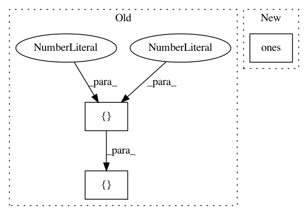

da37438735fd4b845bb0874562bd071865c480bb,texar/modules/encoders/rnn_encoders_test.py,UnidirectionalRNNEncoderTest,test_trainable_variables,#UnidirectionalRNNEncoderTest#,22
Before Change
}
}
encoder = UnidirectionalRNNEncoder(vocab_size=2, hparams=hparams)
inputs = [[1, 0]]
_, _ = encoder(inputs)
self.assertEqual(len(encoder.trainable_variables), 3)
def test_encode(self):
After Change
Tests the functionality of automatically collecting trainable
variables.
inputs = tf.ones([64, 16, 100])
encoder = UnidirectionalRNNEncoder()
_, _ = encoder(inputs)
self.assertEqual(len(encoder.trainable_variables), 2)
In pattern: SUPERPATTERN
Frequency: 3
Non-data size: 3
Instances
Project Name: asyml/texar
Commit Name: da37438735fd4b845bb0874562bd071865c480bb
Time: 2018-03-17
Author: zhitinghu@gmail.com
File Name: texar/modules/encoders/rnn_encoders_test.py
Class Name: UnidirectionalRNNEncoderTest
Method Name: test_trainable_variables
Project Name: asyml/texar
Commit Name: da37438735fd4b845bb0874562bd071865c480bb
Time: 2018-03-17
Author: zhitinghu@gmail.com
File Name: texar/modules/encoders/rnn_encoders_test.py
Class Name: BidirectionalRNNEncoderTest
Method Name: test_trainable_variables
Project Name: ray-project/ray
Commit Name: ebeee1d59a3e3365a455987bf517ad0d8eac35d5
Time: 2021-02-08
Author: cc.ash.math@gmail.com
File Name: rllib/agents/maml/maml_torch_policy.py
Class Name:
Method Name: maml_loss